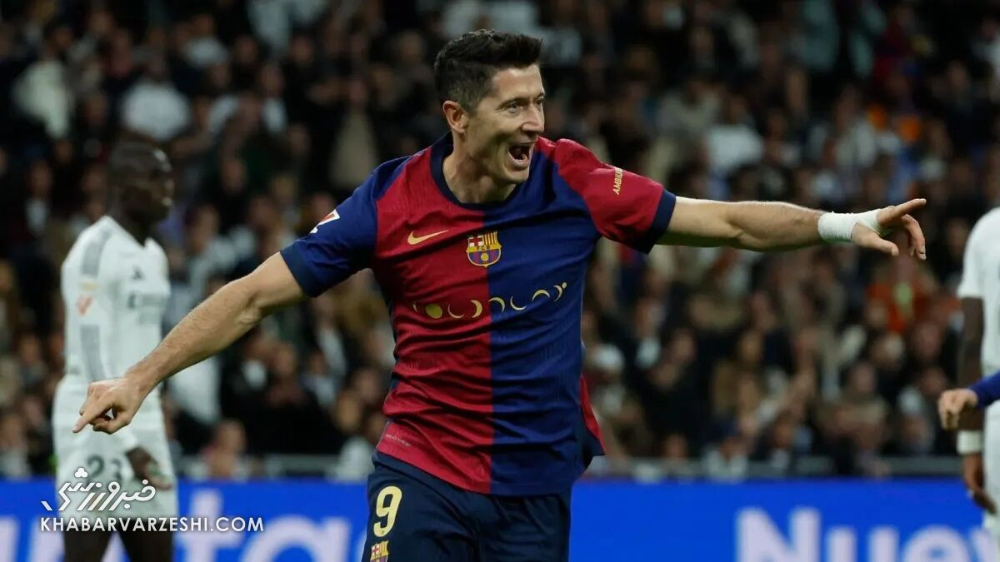

تیمهای رئالمادرید و بارسلونا در دیدار الکلاسیکوی رفت به مصاف هم رفتند که آبیاناریها با نتیجه غیرمنتظره ۴-۰ این بازی را بردند.
به گزارش خبرورزشی، تیمهای رئالمادرید و بارسلونا در دیداری از هفته یازدهم لالیگای اسپانیا در ورزشگاه سانتیاگو برنابئو به مصاف هم رفتند که این بازی با برد قاطع و پرگل ۴-۰ بارسا خاتمه یافت.
رئال و بارسا در حالی در الکلاسیکوی رفت این فصل به میدان رفتند که هردو با شکست تیمهای قدرتمند آلمانی دورتموند و بایرن شرایط خوبی پیش از این نبرد داشتند.
الکلاسیکوی شماره ۳۰۱ پرهیجان و با حملات رئالمادرید آغاز شد، اما به تدریج بارسلونا هم از لاک دفاعی بیرون آمد و به سمت دروازه حریف یورش برد. اولین فرصت خوب هم نصیب لامین یامال شد که در دقیقه ۱۳ توپ را به دستان آندری لونین سپرد. پس از این که چند موقعیت خطرناک دو تیم خلق کردند، اما همگی آفساید اعلام شدند، پدری در دقیقه ۲۸ با شوت دیدنیاش میتوانست دروازه رئال را باز کند که آندری لونین توپ را مهار کرد. کیلیان امباپه در اولین الکلاسیکوی خودش با ضربه چیپ در دقیقه ۳۰ دروازه اینیاکی پنیا را باز کرد، اما این گل را VAR به دلیل آفساید رد کرد. این بازی پرهیجان و پرافتوخیز در نهایت نیمه نخست بدون گل تمام شد.
نیمه دوم سرانجام یکی از دو تیم از کمند آفسایدها فرار کرد! روبرت لواندوفسکی در دقیقه ۵۴ توپ را به گوشه دروازه رئالمادرید فرستاد. ترفندهای بارسا جواب داده بود و بعد از بسته نگه داشتن دروازه، حالا نوبت ریختن زهرشان به میزبان بود. دقیقه ۵۶ روبرت لواندوفسکی با ضربه سر ارسال الخاندرو بالده را تبدیل به گل دوم کرد. دقیقه ۶۵ نزدیک بود رافینیا که ستاره بازی با بایرن بود گل سوم بارسا را بسازد، اما پاس او به روبرت لواندوفسکی با ضربه ستاره لهستانی به تیر دروازه برخورد کرد. دقیقه ۶۸ هم پاس لامین یامال به روبرت لواندوفسکی رسید، اما ستاره لهستانی باز هم نتوانست هتتریک کند و ضربهاش از بالای دروازه بیرون رفت. دقیقه ۷۷ لامین یامال به آرزویش رسید و توپ را به سقف دروازه آندری لونین چسباند تا گل سوم بارسا ثبت شود. دقیقه ۸۴ اینیاکی پنیا با مهار شوت محکم فده والورده خودنمایی کرد. سپس رافینیا در سمت مقابل در دقیقه ۸۵ گل چهارم بارسا را با ضربهای چیپ به ثمر رساند. دقیقه ۱+۹۰ آخرین تلاش کیلیان امباپه هم با شوت او و مهار اینیاکی پنیا باز هم راهی به دروازه نیافت.
بارسلونا با این برد ارزشمند ۲۷ امتیازی شد و در صدر جدول جا خوش کرد، در حالی که رئالمادرید رده دومی ۲۴ امتیاز دارد و فاصلهشان با رقیب به ۶ امتیاز افزایش پیدا کرد.
